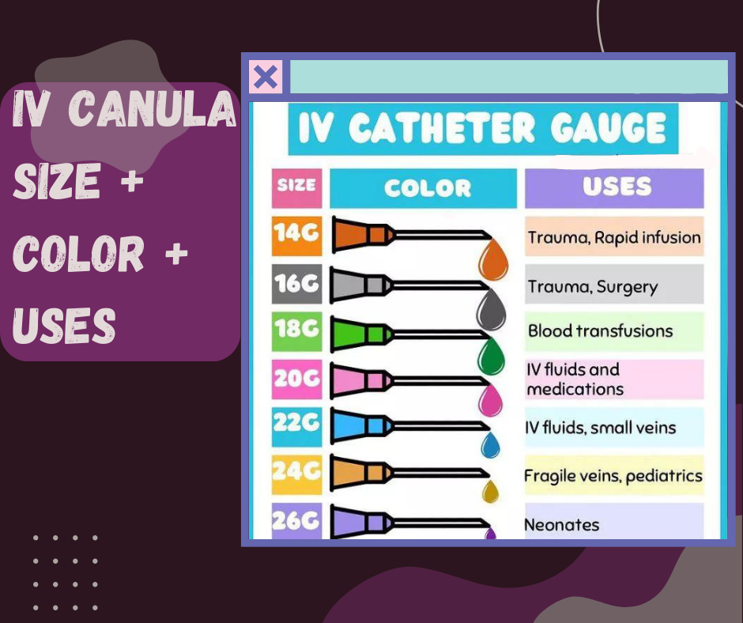
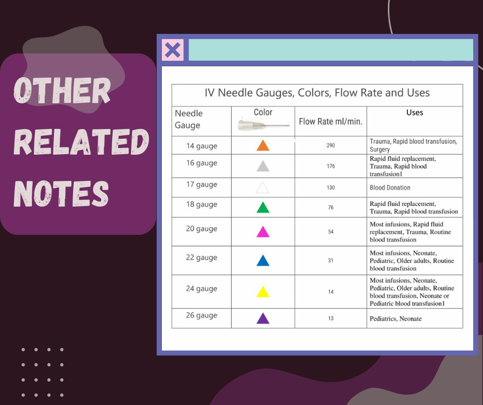

• Selecting the right gauge size for a catheter ensures proper blood flow, as a larger gauge will yield more efficient delivery of medication or fluids.
• Smaller gauge sizes increase the risk of clotting or embolism due to inadequate flow, which can be dangerous for patients.
• The more significant the diameter, the more fluid can pass through it in a given time frame, meaning larger gauge catheters are ideal
• for high-flow situations such as rapid fluid transfusions.
• Different gauge sizes also differ in insertion difficulty, with larger gauges requiring more force and care to get them into the vein properly.
• If a patient has small veins or is otherwise fragile, selecting a smaller gauge size can make the insertion process more accessible and less intrusive.
• Gauge size is an essential factor when selecting an IV Catheter as it will determine the overall flow rate of the catheter,
as well as how easy or difficult it is to insert.
For more details, visit Types of IV Cannula: 8 Different Sizes, Colors, and Uses. (pharmchoices.com)


|